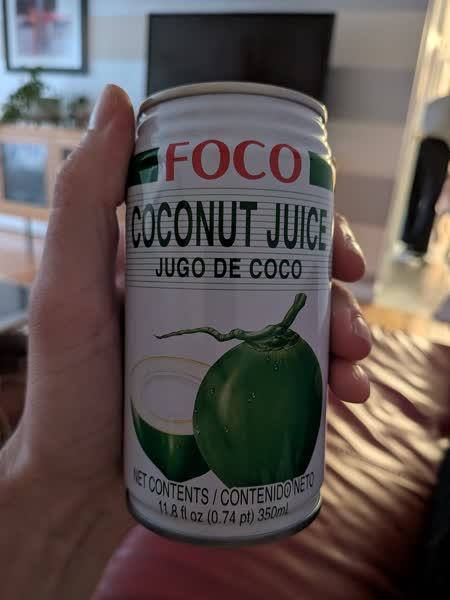

October 2026 · 11.8 fl oz (350 mL) · Still · Thailand · Pasteurized · Added Sugar · Pulp · Not Organic
Ranked 39th of 42 coconut waters I have scored · below Coconut Season w/ Pulp (3.7) · above Parrot w/ Pulp (3.1). See the full ranking.
This one comes in one of those thick, sturdy, 350ml cans. I'm assuming it uses a lot more aluminum than the standard can. Thailand coconuts with a hefty portion of added sugar (18 G per 350 ml) and some pulp.
This is glorified coconut sugar water. Very thick, and the pulp is not particularly fresh or satisfying. There really are no redeeming qualities here, unless you need your coconut water to have the viscosity of whole milk.
These coconuts are grown in habitats threatened by palm oil deforestation. If you find this site useful, consider donating to the Rainforest Action Network.